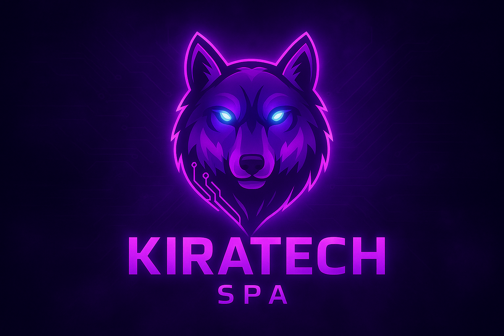

Recupera el rendimiento óptimo de tu equipo — servicio técnico profesional con diagnóstico preciso.
Ofrecemos mantenimiento especializado de computadoras y consolas en Chihuahua, con limpieza profesional de componentes, cambio de pasta térmica premium, instalación de SSD y servicio técnico certificado en la zona norte de la ciudad.
Diagnóstico completo, componentes originales, reportes técnicos detallados y garantía en todos nuestros servicios.
Diagnóstico profesional y Mantenimiento especializado — haz click en cada servicio para ver procesos técnicos detallados
Mantenimiento especializado para PS4 • PS5 • Xbox Series X/S • Nintendo Switch — diagnóstico y componentes originales
"Excelente servicio técnico. Mi Asus TUF A15 (Ryzen 5) tenía temperaturas de CPU en 92°C y GPU en 69°C. Después del mantenimiento completo con limpieza profesional y cambio de pasta térmica, bajó a 57°C CPU y 46°C GPU. El técnico me explicó todo el proceso y me dio un reporte detallado con mediciones antes/después."
— Ricardo, Gamer Profesional
"Mi PS4 Pro tenía 5 años de uso intenso y sonaba como un avión. El servicio técnico fue impecable - desarmaron completamente la consola, limpiaron todos los componentes con equipo profesional, reemplazaron la pasta térmica y calibraron los ventiladores. Ahora es completamente silenciosa y las temperaturas se mantienen en rangos óptimos. El técnico me explicó que el polvo acumulado estaba causando resistencia al flujo de aire."
— Aldo, Usuario Intensivos
Servicio técnico profesional con cita previa para diagnóstico preciso y atención especializada.
Diagnóstico técnico profesional y reparación certificada
💬 Contactar para diagnósticoDiagnóstico gratuito • Técnicos certificados • Garantía incluida
Los servicios básicos toman 2-3 horas. Servicios más complejos como instalación de SSD pueden tomar 1-2 horas adicionales. Te informamos el tiempo exacto durante el diagnóstico.
Sí, todos nuestros servicios incluyen garantía. Mantenimiento preventivo: 30 días. Servicios térmicos: 6 meses. Instalación de SSD: 30 días. Reparaciones de consolas: 60 días.
Sí, ofrecemos servicio a domicilio en la zona norte de Chihuahua. El costo adicional es de $150 MXN para traslado dentro de la ciudad.
El diagnóstico incluye verificación completa del hardware, medición de temperaturas, análisis de rendimiento, y recomendaciones específicas para tu equipo. Es gratuito si contratas el servicio.
Utilizamos componentes de calidad profesional y certificados. Para consolas utilizamos partes compatibles con especificaciones originales del fabricante.